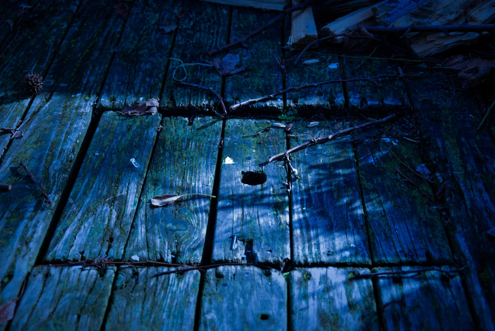

source: unsplash
Félicitations! Vous avez trouvez l'eau magique, le remède qui sauvera votre village.
Maintenant, vous remarquez une trappe secrète cachée sous les débris...

Félicitations! Vous avez trouvez l'eau magique, le remède qui sauvera votre village.
Maintenant, vous remarquez une trappe secrète cachée sous les débris...